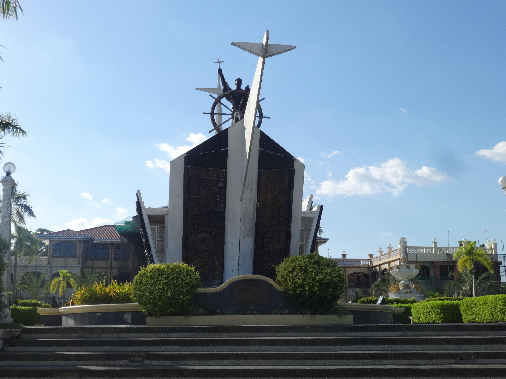
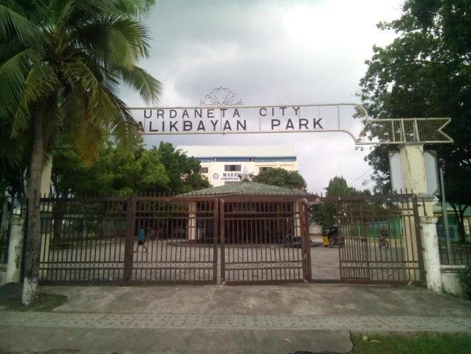
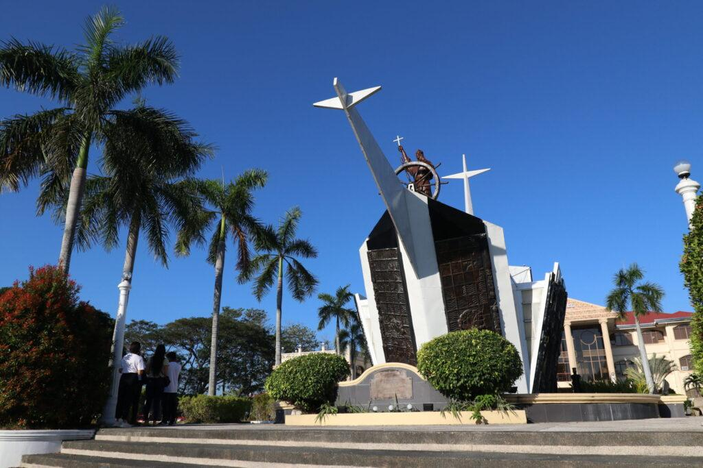
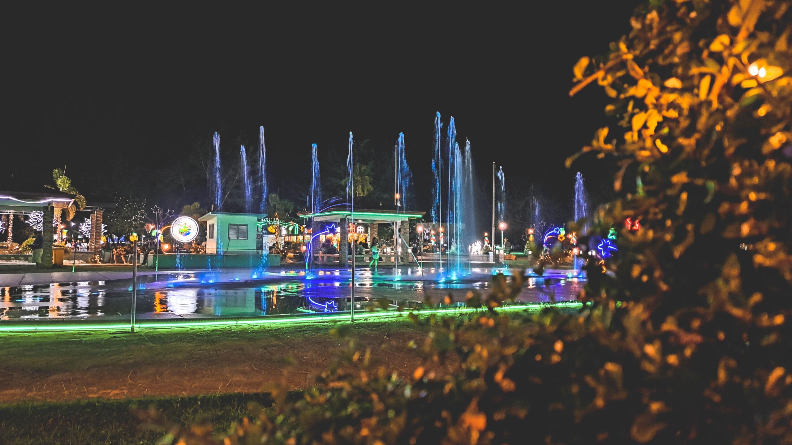

The Urdaneta Park Landmark Monument is a central historical and cultural landmark in Urdaneta City, Pangasinan, Philippines. It honors the city's namesake, the 16th-century Spanish explorer and Augustinian friar Andres de Urdaneta, and stands as a symbol of the city's heritage and civic identity.

Historical Background
The Urdaneta Park Landmark Monument in Urdaneta City, Pangasinan commemorates Friar Andres de Urdaneta, a Spanish navigator, explorer, and Augustinian missionary who played a crucial role in early transpacific navigation.
In 1565, he successfully discovered the tornaviaje, or return route from the Philippines to Mexico, which enabled regular trade across the Pacific through the Manila-Acapulco Galleon Trade. His contribution greatly influenced global trade and strengthened connections between Asia and the Americas during the Spanish colonial period.
Urdaneta City, officially established in 1858, was named in his honor as recognition of his historical significance and influence. The monument serves as a reminder of the city's ties to colonial history, maritime exploration, and the broader story of globalization in the 16th century.

Design and Features
The Urdaneta Park Landmark Monument is strategically located along MacArthur Highway, making it a highly visible and accessible landmark within the city. At its center stands a statue of Friar Andres de Urdaneta, typically depicted in religious attire and mounted on a pedestal.
The statue is crafted from durable materials such as bronze or stone, symbolizing permanence and respect for the historical figure it represents. Surrounding the monument is a landscaped park area with paved walkways, greenery, and open spaces that enhance its visual appeal.
The park functions not only as a decorative urban feature but also as a public space where residents and visitors can gather. Its design blends historical commemoration with modern urban planning.

Cultural and Civic Importance
The Urdaneta Park Landmark Monument holds strong cultural and civic significance for the people of Urdaneta City. As one of the most recognizable landmarks in the area, it symbolizes the city's identity and historical roots.
It serves as a focal point for community pride, reminding residents of their connection to a figure who contributed to world history through exploration and navigation.
Beyond its symbolic value, the monument and surrounding park play an active role in the city's social and cultural life. It is often used as a venue for public events, ceremonies, and celebrations such as the city's founding anniversary and other civic activities.
